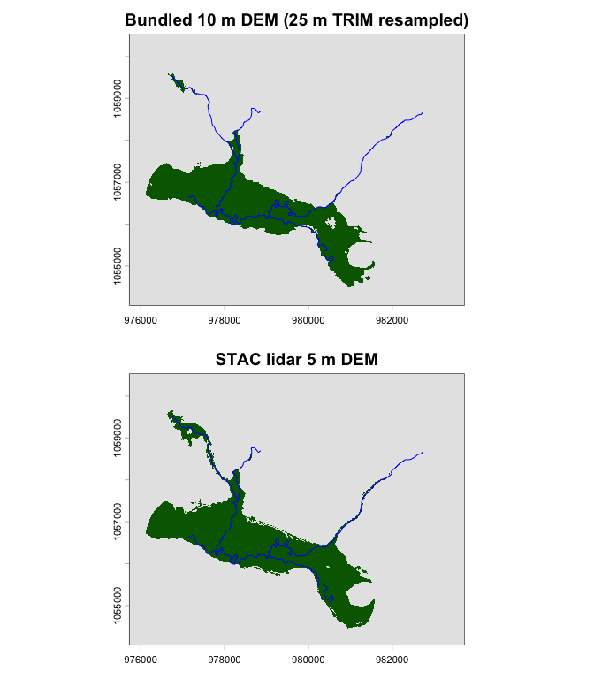
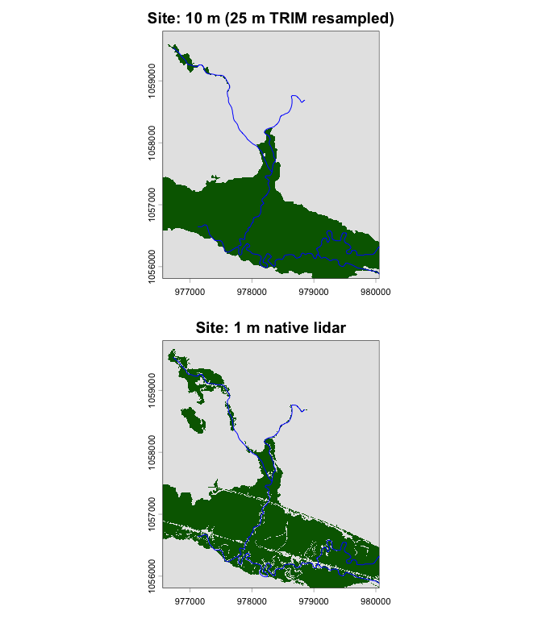

flooded works with any DEM — it doesn’t require a
specific source. This vignette demonstrates fetching 1 m lidar tiles
from a STAC catalog and comparing the resulting floodplain with the
bundled 10 m DEM.
We use the same Neexdzii Kwah test area (Bulkley River near Topley, BC) as the main vignette, but source the DEM from stac-dem-bc — a STAC collection of BC provincial lidar DEMs.
Setup
library(flooded)
library(terra)
#> terra 1.8.93
library(sf)
#> Linking to GEOS 3.13.0, GDAL 3.8.5, PROJ 9.5.1; sf_use_s2() is TRUE
library(rstac)
library(gdalcubes)
#>
#> Attaching package: 'gdalcubes'
#> The following objects are masked from 'package:terra':
#>
#> animate, crop, size
terra::terraOptions(threads = 12)What does “resampled to 10 m” mean?
The bundled test DEM is the 25 m BC TRIM DEM resampled to a 10 m grid using bilinear interpolation. That means each original 25 m pixel gets split into smaller 10 m pixels, with values smoothly blended from neighbours. The grid is genuinely 10 m — each cell is 10 m × 10 m — but the terrain detail is still 25 m quality. It’s like zooming into a low-resolution photo: the image gets bigger but not sharper. No real topographic detail is added.
In contrast, the 1 m lidar tiles from the STAC catalog are natively 1 m. They capture real features at that scale — side channels, terrace edges, drainage ditches — that a 25 m DEM physically cannot see, no matter how finely you resample it.
Bundled 10 m baseline
First, load the bundled test data and run the VCA to establish a baseline.
dem_10m <- rast(system.file("testdata/dem.tif", package = "flooded"))
slope_10m <- rast(system.file("testdata/slope.tif", package = "flooded"))
streams <- st_read(
system.file("testdata/streams.gpkg", package = "flooded"),
quiet = TRUE
)
precip_r <- fl_stream_rasterize(streams, dem_10m, field = "map_upstream")
valleys_10m <- fl_valley_confine(
dem_10m, streams,
field = "upstream_area_ha",
slope = slope_10m,
slope_threshold = 9,
max_width = 2000,
cost_threshold = 2500,
flood_factor = 6,
precip = precip_r
)
n_10m <- sum(values(valleys_10m) == 1, na.rm = TRUE)
cat("10 m DEM valley cells:", n_10m, "/", ncell(valleys_10m),
"(", round(100 * n_10m / ncell(valleys_10m), 1), "%)\n")
#> 10 m DEM valley cells: 54637 / 518400 ( 10.5 %)Fetch 1 m lidar DEM from STAC
Query the stac-dem-bc collection for tiles intersecting
our test area. We filter to 2019 tiles only (1 m lidar).
# Test area bounding box in WGS84
# terra ext() gives xmin,xmax,ymin,ymax — STAC needs xmin,ymin,xmax,ymax
dem_wgs <- project(dem_10m, "EPSG:4326")
e <- ext(dem_wgs)
bbox <- c(e$xmin, e$ymin, e$xmax, e$ymax)
# Query STAC
items <- stac("https://images.a11s.one/") |>
stac_search(
collections = "stac-dem-bc",
bbox = bbox,
datetime = "2019-01-01T00:00:00Z/2019-12-31T23:59:59Z"
) |>
post_request() |>
items_fetch()
cat("STAC items found:", length(items$features), "\n")
#> STAC items found: 2
for (f in items$features) cat(" ", f$id, "\n")
#> 093-093l-2019-dem-bc_093l059_xli1m_utm09_2019
#> 093-093l-2019-dem-bc_093l049_xli1m_utm09_2019Mosaic and crop with gdalcubes
Use gdalcubes to mosaic the STAC tiles and reproject to
BC Albers (EPSG:3005), matching the test area extent. We use 5 m
resolution as a practical compromise — finer than the bundled 10 m, but
fast enough to build in a vignette. For production work, set
dx = 1, dy = 1 for full 1 m resolution.
# Build gdalcubes image collection from STAC items
col <- stac_image_collection(items$features, asset_names = "image")
# Define target cube — same extent as bundled DEM, 5 m resolution
e <- ext(dem_10m)
stac_res <- 5 # use 1 for full resolution (100x more cells, ~25 min fetch)
v <- cube_view(
srs = "EPSG:3005",
extent = list(
left = e$xmin, right = e$xmax,
bottom = e$ymin, top = e$ymax,
t0 = "2019-01-01", t1 = "2019-12-31"
),
dx = stac_res, dy = stac_res, dt = "P1Y",
aggregation = "first",
resampling = "bilinear"
)
# write_tif creates a directory with timestamped TIF(s) inside
cube <- raster_cube(col, v)
out_dir <- tempfile()
write_tif(cube, out_dir)
dem_stac_path <- list.files(out_dir, pattern = "\\.tif$", full.names = TRUE)[1]
dem_stac <- rast(dem_stac_path)
cat(stac_res, "m DEM:", ncol(dem_stac), "x", nrow(dem_stac), "pixels\n")
#> 5 m DEM: 1600 x 1296 pixels
cat("Resolution:", res(dem_stac), "m\n")
#> Resolution: 5 5 mRun VCA on STAC DEM
# Rasterize streams onto the STAC DEM grid
precip_stac <- fl_stream_rasterize(streams, dem_stac, field = "map_upstream")
valleys_stac <- fl_valley_confine(
dem_stac, streams,
field = "upstream_area_ha",
slope = slope_stac,
slope_threshold = 9,
max_width = 2000,
cost_threshold = 2500,
flood_factor = 6,
precip = precip_stac
)
n_stac <- sum(values(valleys_stac) == 1, na.rm = TRUE)
cat(stac_res, "m DEM valley cells:", n_stac, "/", ncell(valleys_stac),
"(", round(100 * n_stac / ncell(valleys_stac), 1), "%)\n")
#> 5 m DEM valley cells: 250564 / 2073600 ( 12.1 %)Compare
# Resample STAC result to 10 m grid for visual comparison
valleys_stac_10 <- resample(valleys_stac, dem_10m, method = "near")
# Area comparison
area_10m <- n_10m * res(dem_10m)[1] * res(dem_10m)[2] / 1e6
area_stac <- sum(values(valleys_stac_10) == 1, na.rm = TRUE) *
res(dem_10m)[1] * res(dem_10m)[2] / 1e6
cat("Valley area (bundled 10 m DEM):", round(area_10m, 2), "km²\n")
#> Valley area (bundled 10 m DEM): 5.46 km²
cat("Valley area (STAC", stac_res, "m DEM):", round(area_stac, 2), "km²\n")
#> Valley area (STAC 5 m DEM): 6.26 km²
par(mfrow = c(2, 1), mar = c(2, 4, 2, 1))
plot(valleys_10m, col = c("grey90", "darkgreen"),
main = "Bundled 10 m DEM (25 m TRIM resampled)", legend = FALSE)
plot(st_geometry(streams), add = TRUE, col = "blue", lwd = 1)
plot(valleys_stac_10, col = c("grey90", "darkgreen"),
main = paste0("STAC lidar ", stac_res, " m DEM"), legend = FALSE)
plot(st_geometry(streams), add = TRUE, col = "blue", lwd = 1)
Valley delineation from bundled 10 m DEM (top) vs STAC lidar DEM (bottom).
Site-level zoom: 1 m lidar
At watershed scale, 5–10 m resolution is practical. But for site-level restoration prescriptions — identifying where to excavate historic fill, reconnect side channels, or plug drainage trenches — 1 m lidar is essential. Those features are invisible at 25 m.
Here we crop to a ~3.5 × 4 km site around Robert Hatch Creek and Richfield Creek where they enter the Bulkley River floodplain, and run at full 1 m resolution.
# Site extent — Robert Hatch / Richfield confluence with Bulkley
site_ext <- ext(976560, 980060, 1055808, 1059808)
# Fetch 1 m lidar for the site extent
site_wgs <- project(rast(site_ext, crs = "EPSG:3005"), "EPSG:4326")
se <- ext(site_wgs)
site_bbox <- c(se$xmin, se$ymin, se$xmax, se$ymax)
site_items <- stac("https://images.a11s.one/") |>
stac_search(
collections = "stac-dem-bc",
bbox = site_bbox,
datetime = "2019-01-01T00:00:00Z/2019-12-31T23:59:59Z"
) |>
post_request() |>
items_fetch()
cat("STAC tiles for site:", length(site_items$features), "\n")
#> STAC tiles for site: 2
# Mosaic at 1 m
site_col <- stac_image_collection(site_items$features, asset_names = "image")
site_view <- cube_view(
srs = "EPSG:3005",
extent = list(
left = 976560, right = 980060,
bottom = 1055808, top = 1059808,
t0 = "2019-01-01", t1 = "2019-12-31"
),
dx = 1, dy = 1, dt = "P1Y",
aggregation = "first",
resampling = "bilinear"
)
site_cube <- raster_cube(site_col, site_view)
site_dir <- tempfile()
write_tif(site_cube, site_dir)
dem_1m <- rast(list.files(site_dir, "\\.tif$", full.names = TRUE)[1])
cat("1 m DEM:", ncol(dem_1m), "x", nrow(dem_1m), "pixels (",
format(ncell(dem_1m), big.mark = ","), "cells)\n")
#> 1 m DEM: 3500 x 4000 pixels ( 1.4e+07 cells)
slope_1m <- terra::terrain(dem_1m, v = "slope", unit = "degrees")
slope_1m <- tan(slope_1m * pi / 180) * 100
# Crop streams to site
streams_site <- st_crop(streams, st_as_sfc(st_bbox(c(
xmin = 976560, ymin = 1055808, xmax = 980060, ymax = 1059808
), crs = st_crs(streams))))
#> Warning: attribute variables are assumed to be spatially constant throughout
#> all geometries
precip_1m <- fl_stream_rasterize(streams_site, dem_1m, field = "map_upstream")
valleys_1m <- fl_valley_confine(
dem_1m, streams_site,
field = "upstream_area_ha",
slope = slope_1m,
slope_threshold = 9,
max_width = 2000,
cost_threshold = 2500,
flood_factor = 6,
precip = precip_1m
)
#> Warning: [costDist] distance algorithm did not converge
n_1m <- sum(values(valleys_1m) == 1, na.rm = TRUE)
cat("1 m DEM valley cells:", format(n_1m, big.mark = ","), "/",
format(ncell(valleys_1m), big.mark = ","),
"(", round(100 * n_1m / ncell(valleys_1m), 1), "%)\n")
#> 1 m DEM valley cells: 3,883,179 / 1.4e+07 ( 27.7 %)
# Run 10 m (resampled TRIM) on the same site for comparison
dem_site_10m <- terra::crop(dem_10m, site_ext)
slope_site_10m <- terra::crop(slope_10m, site_ext)
precip_site_10m <- fl_stream_rasterize(streams_site, dem_site_10m, field = "map_upstream")
valleys_site_10m <- fl_valley_confine(
dem_site_10m, streams_site,
field = "upstream_area_ha",
slope = slope_site_10m,
slope_threshold = 9,
max_width = 2000,
cost_threshold = 2500,
flood_factor = 6,
precip = precip_site_10m
)
par(mfrow = c(2, 1), mar = c(2, 4, 2, 1))
plot(valleys_site_10m, col = c("grey90", "darkgreen"),
main = "Site: 10 m (25 m TRIM resampled)", legend = FALSE)
plot(st_geometry(streams_site), add = TRUE, col = "blue", lwd = 1)
# Resample 1 m result to same grid for visual comparison
valleys_1m_plot <- resample(valleys_1m, dem_site_10m, method = "near")
plot(valleys_1m_plot, col = c("grey90", "darkgreen"),
main = "Site: 1 m native lidar", legend = FALSE)
plot(st_geometry(streams_site), add = TRUE, col = "blue", lwd = 1)
Site-level comparison: resampled 10 m (top) vs native 1 m lidar (bottom). Fine-scale features like side channels and terrace edges emerge at 1 m.
Quantifying the difference
# Resample 1 m result to the 25 m (resampled to 10 m) site grid
valleys_1m_on_10m <- resample(valleys_1m, dem_site_10m, method = "near")
# Site floodplain area from each DEM
cell_area_m2 <- res(dem_site_10m)[1] * res(dem_site_10m)[2] # 100 m²
fp_25m <- sum(values(valleys_site_10m) == 1, na.rm = TRUE)
fp_1m <- sum(values(valleys_1m_on_10m) == 1, na.rm = TRUE)
# "Pop-ups": cells that are floodplain at 25 m but NOT at 1 m
popups <- sum(values(valleys_site_10m) == 1 & values(valleys_1m_on_10m) != 1,
na.rm = TRUE)
data.frame(
Metric = c(
"Floodplain area (25 m TRIM)",
"Floodplain area (1 m lidar)",
"Elevated features (pop-ups)",
"Pop-ups as % of 25 m floodplain"
),
Value = c(
paste(round(fp_25m * cell_area_m2 / 1e4, 1), "ha"),
paste(round(fp_1m * cell_area_m2 / 1e4, 1), "ha"),
paste(round(popups * cell_area_m2 / 1e4, 1), "ha"),
paste0(round(100 * popups / fp_25m, 1), "%")
)
) |> knitr::kable()| Metric | Value |
|---|---|
| Floodplain area (25 m TRIM) | 373 ha |
| Floodplain area (1 m lidar) | 388.3 ha |
| Elevated features (pop-ups) | 36.1 ha |
| Pop-ups as % of 25 m floodplain | 9.7% |
The elevated features — “pop-ups” — are areas the 25 m TRIM DEM classifies as floodplain but the 1 m lidar reveals are sitting above the flood surface. These are the barriers: roads, dykes, fill, and other raised features that block lateral connectivity.
Anthropogenic barriers to floodplain connectivity
The difference between Figures @ref(fig:plot-compare) and @ref(fig:site-compare) is striking — and informative. The 25 m TRIM DEM (resampled to a 10 m grid but still only 25 m terrain detail) shows the floodplain as one continuous green mass. The 1 m lidar reveals a different story: white gaps cut through the green where the ground surface sits above the modelled flood level.
These white features are areas the VCA identifies as “not floodplain” — pixels too high or too steep to be reached by the flood surface. At 25 m resolution those features are invisible because a single pixel averages the road embankment with the surrounding low ground, smoothing it away. At 1 m, the actual elevation of a raised road bed, railway grade, or dyke is resolved, so it stands out.
Linear white features cutting through the floodplain are likely:
- Roads — raised road beds, even a metre or two of fill is enough
- Railway grades — often built on significant embankments
- Dykes and levees — flood protection berms along the river
- Riprap and erosion protection — armoured banks
Irregular white patches may be:
- Agricultural fill — floodplain built up over decades of farming
- Building pads — cleared and filled for structures
- Natural terraces — legitimately higher ground not connected to the flood surface
The implication for restoration is direct: the gap between the 25 m and 1 m results is largely the anthropogenic footprint on the floodplain. The 25 m DEM says “this is all floodplain” because it cannot see the barriers. The 1 m DEM says “this would be floodplain, except these raised features are blocking it.” Those white features — roads, dykes, fill — are potential intervention targets. Removing or breaching them could reconnect floodplain function: filling drainage trenches, excavating historic fill back to floodplain grade, or installing culverts and bridges to restore lateral connectivity.
This is the power of running flooded at 1 m: it turns a
binary floodplain/not-floodplain map into a diagnostic tool for
identifying what is preventing floodplain from
functioning and where to act.
Summary
A practical workflow
Use coarse resolution (5–10 m) at watershed scale to identify candidate floodplain sites, then zoom into specific sites at 1 m for restoration prescriptions. The 1 m lidar reveals features that matter for on-the-ground work: historic fill from agriculture, drainage trenches, disconnected side channels, and terrace edges where excavation could reconnect floodplain.
DEM sources
The flooded pipeline is DEM-agnostic. Any source
works:
| Source | Native resolution | Notes |
|---|---|---|
| BC Data Catalogue (WCS) | 25 m | Provincial TRIM DEM; bcdata get-dem (Python CLI) |
| Bundled test data | 25 m → 10 m | TRIM resampled via bilinear;
system.file("testdata/", package = "flooded")
|
| stac-dem-bc (this vignette) | 1 m | Provincial lidar; rstac + gdalcubes
|
| CDEM / SRTM | 30 m | Federal/global fallback for areas without lidar |